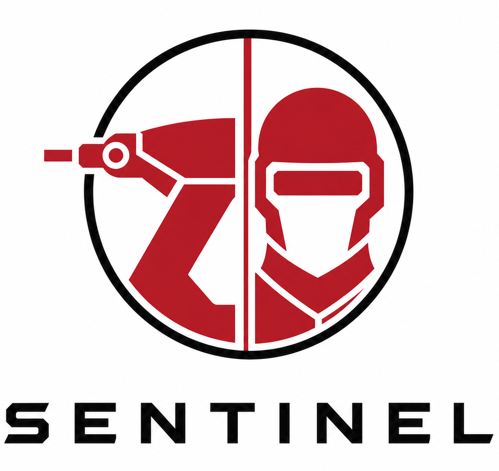

'">Sentinel: Tracking & Kinetic Intercept
Computer Vision Pipeline + High-Dynamic Actuation System
Engineering Cycle
Control loops are useless if you do not know what you are looking at, and detection is useless if you cannot act on it. Sentinel is a closed-loop defense prototype that bridges the gap between software perception and physical actuation.
The system uses a C++ OpenCV pipeline to detect fast-moving targets, feeds state estimates into a Kalman Filter, and transmits intercept coordinates to the Sentinel-Actuator, a high-speed, 2-axis robotic gimbal powered by a Teensy 4.1 microcontroller.
- Perception (The Eyes): Motion-based and learned detectors (YOLO/Background Subtraction) process raw frames to extract target centroids in noisy environments.
- State Estimation (The Brain): A 3D Kalman Filter fuses noisy measurements to estimate velocity and predict future position, compensating for system latency.
- Kinetic Actuation (The Muscle): The "Sentinel-Actuator" module. A custom 2-DOF aluminum turret driven by high-torque digital servos performs real-time visual servoing to physically track and "paint" the target with a laser designator.
Sentinel-Actuator // Hardware-in-the-Loop
>> Avionics & Actuation
>> Comms Architecture
HUD & Telemetry Preview
The full-screen HUD validates the system in real-time. It visualizes the raw detection bounding boxes, the smoothed Kalman trajectory (predicted path), and the calculated intercept point.
Future updates will overlay the Turret's real-time position feedback to visualize tracking error during live fire tests.
LAUNCH HUD DEMOTech Stack
Execution Log
- Phase 1: Vision Pipeline & Kalman Filter (C++).
- Phase 2: Hardware Build (Gimbal + Teensy integration).
- Phase 3: Comms Bridge (Serial Protocol).
- Phase 4: Live intercept tests & latency tuning.
Project Goal
To engineer a complete "Detect-Track-Engage" loop from scratch. This project demonstrates proficiency in full-stack robotics: from low-level hardware actuation and embedded control to high-level computer vision and state estimation.